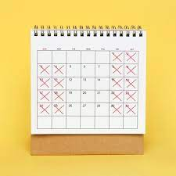
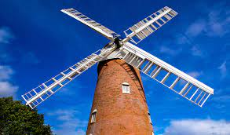

Three Day Workweeks
With the construction of required services, we could reduce our week to a three day workweek. Q: "But he maintained that it could all be done in a year. And thereafter, he declared, so much labour would be saved that the animals would only need to work three days a week."

Construction of a Windmill
Although laborous and a difficult task, it will significantly improve our economy, farm, and make all tasks easier overall. Endless benefits. Q: "Snowball declared that this was just the place for a windmill, which could be made to operate a dynamo and supply the farm with electrical power. This would light the stalls and warm them in winter, and would also run a circular saw, a chaff-cutter, a mangel-slicer, and an electric milking machine."